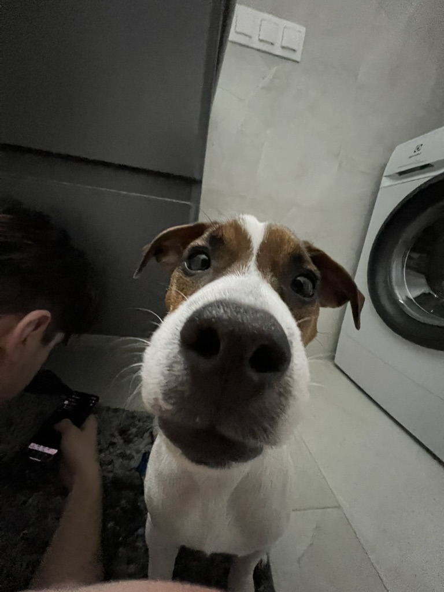

A quiet entrance
Motion should support the image, not compete with it.
The image and text reveal as they move through the viewport. Stop scrolling and the animation stops too.
Scroll-driven animation

A quiet entrance
The image and text reveal as they move through the viewport. Stop scrolling and the animation stops too.